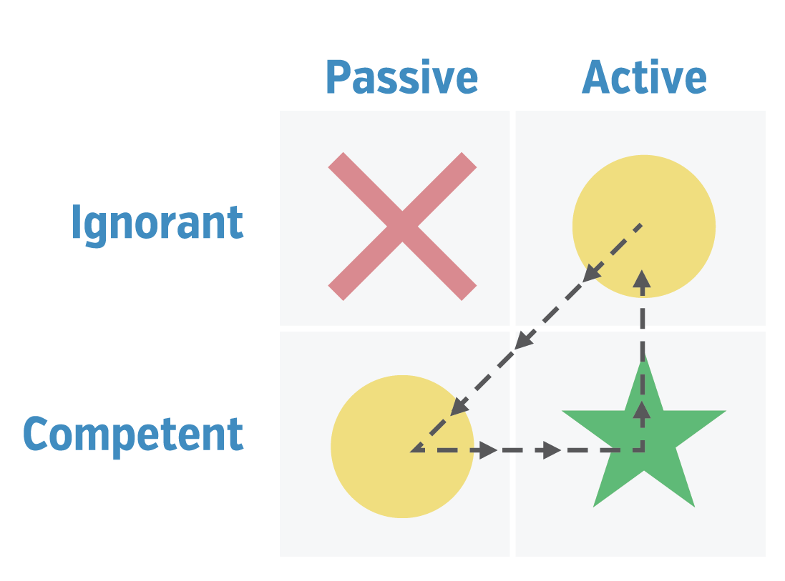

The cycle
Jan 14, 2015

Learning to code is a roller coaster ride. I start new projects with a high sense of excitement and Active engagement. It's not long before I zip down into a state of ignorance. My ignorance converts into introversion and analysis, which turns me into a more Passive temperament until I regain Competence. When I know that my Competence is accurate, then I get Active again.
Active and Competent is a great place to be. It's the comfort zone. I'd love to stay there permanently! But when life changes we are faced with the choice to run or rise to the challenge.
More from
Learning to Code
hash page
One of my first hackathons at starter league was an idea to create a page based off hashtags you use most often on twitter. We called it a hashpage. There were 5 of us on the founding team and we had a weekend to build it.
HashPageMe founding team...
Mockup and models
This is the second post about my learning project; an app for ideas. Read the backstory.
Below is mockups for the Idea page. It will be an overview of the idea and the latest contributions.

My experience at LivingSocial helped me see how to break...
An idea for ideas
I am regularly looking for building projects to develop my coding skills. I've shipped a few apps that I'm proud of including Destroy All Tasks and Afterburners. I confess they are both in near abandon-ware but they had actual users at one time!